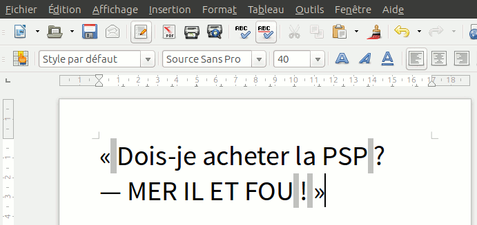

La typographie française impose des espaces avant et après certains signes de ponctuation. Notez maintenant qu’une espace constitue une opportunité de passage à la ligne (« soft wrap opportunity »), ce qui veut dire qu’un logiciel pourra la remplacer par un saut de ligne pour honorer l’alignement du texte dans son conteneur. Enfin, imaginez que cette espace est adjacente à un signe de ponctuation… c’est moche.
Si on jette un coup d’œil aux règles d’écriture, on peut s’apercevoir qu’en général une espace doit être insécable quand elle se trouve devant un signe double ou fermant, ou après un signe ouvrant :
La particularité d’une espace insécable vient du fait que les caractères qu’elle sépare seront toujours sur la même ligne. Ainsi quelles que soient les conditions d’affichage vous éviterez un rendu… gênant.
Pensez-y !
Si vous faites du traitement de texte, il y a des chances que votre logiciel remplace vos espaces par des espaces insécables au besoin, comme sur LibreOffice Writer par exemple.
Si non, vous pouvez généralement utiliser une combinaison de touches propre à votre système :
| Windows | Alt + 255 (au pavé numérique) |
|---|---|
| UNIX | Ctrl + Shift + U puis 00A0 |
| Mac | Alt + Shift + Espace |
255 identifie l’espace insécable dans la page de code 437 et U+00A0 dans Unicode.
Notez que votre éditeur peut désactiver les combinaisons selon les raccourcis qu’il définit. S’il ne permet pas d’insérer une espace insécable, vous pouvez la copier via la table des caractères de votre système.
Enfin si vous écrivez du HTML, vous pouvez utiliser l’entité
(no-break space). Toutefois prenez garde au fait qu’une espace insécable dans du code HTML est
rendue par le navigateur comme une simple espace, comportement qui remonte à l’époque où ce caractère n’existait pas
et permettait de l’émuler (c’était il y a longtemps).
Par conséquent, vous ne pouvez pas copier une espace insécable sur une page web,
sauf si elle se trouve dans un champ de formulaire comme ici :
Vous venez de copier l’espace juste au-dessus ; comment pouvez vous savoir si elle est insécable ? Eh bien vous pouvez
no-break space (U+00A0), c’est gagné !
Si vous avez consulté la liste des signes de ponctuation mentionnée plus haut, vous avez remarqué qu’est parfois mentionnée l’espace fine. Évitez la : elle sera remplacée par un tofu (▯) si aucune police ne la supporte.
Maintenant que vous savez tout, je compte sur vous pour vous mettre à jour et répandre la bonne parole. Bon courage !